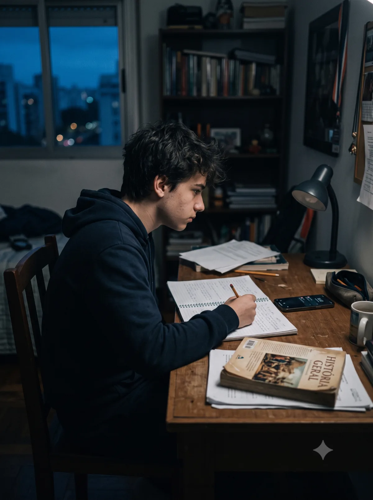

Cena 01 · Infância
A tela encerra a crise — e passa a organizar a regulação da criança.
Imersão TDAH ao Longo da Vida · 3ª Edição
Um dia inteiro de raciocínio clínico para diferenciar transtorno, hiperestimulação e desregulação — e conduzir casos com mais precisão.
Para psicólogos, neuropsicólogos e psiquiatras que atendem TDAH.
Nem toda tecnologia é apenas risco.
A clínica contemporânea exige distinguir manifestações persistentes do neurodesenvolvimento de padrões de desregulação atravessados pelo ambiente digital — e reconhecer quando ambos coexistem.
Diagnosticar sem simplificar. Intervir sem demonizar. Utilizar a tecnologia sem ingenuidade.
Cenas comuns, sintomas ambíguos e trajetórias distintas. Casos que exigem mais do que reduzir telas ou confirmar diagnósticos.
A tela encerra a crise — e passa a organizar a regulação da criança.

Noites hiperconectadas, manhãs sem regulação e prejuízo escolar crescente.

O trabalho é interrompido a cada notificação — e a dificuldade não termina quando a tela fecha.

Para evitar o conflito, a família entrega a tela. Depois, já não sabe como retirá-la.

Diante de tarefas pouco estimulantes, o adolescente alterna aplicativos, abandona a atividade e conclui que não consegue prestar atenção.

A queixa de TDAH surgiu depois de uma mudança intensa na rotina digital. O que pertence à trajetória e o que pertence ao contexto?
Um caso atravessando todo o dia.
Arthur Berberian e Bruna Trevisan conduzem hipóteses, impasses e decisões em diálogo — não como palestras isoladas, mas como raciocínio clínico em ato.

UNIFESP · USP · PhD Psiquiatria
Psicólogo e neuropsicólogo clínico, com mais de 20 anos de prática. Doutor em Psiquiatria pela UNIFESP e especialista em Neuropsicologia e TCC pela USP. Docente e supervisor clínico nas especializações em Neuropsicologia da UNIFESP e em TCC do CTC Veda.
CRP 06/86877

Mackenzie · FMUSP-HC · UNIFESP · Pós-doc
Psicóloga e neuropsicóloga, doutora e pós-doutora em Distúrbios do Desenvolvimento pelo Mackenzie. Especialista em TCC pelo CTC Veda. Tem 18 anos de prática dedicada ao neurodesenvolvimento e mais de mil casos clínicos supervisionados nas especializações em Neuropsicologia da FMUSP-HC e da UNIFESP.
CRP 06/94301
Um caso longitudinal, quatro blocos clínicos, discussões em mesa — da investigação à condução clínica.
O mesmo paciente será retomado ao longo do dia para mostrar como ambientes, sintomas, hipóteses e decisões clínicas se transformam em cada etapa do desenvolvimento.
Da diferenciação diagnóstica ao manejo do excesso e ao uso da tecnologia como recurso terapêutico.
Um tempo dedicado à aplicação guiada: simulação de uma situação clínica, experimentação de uma técnica ou resolução de um impasse do caso trabalhado ao longo do dia.
Perguntas difíceis, impasses diagnósticos e decisões construídas ao vivo. O momento em que as hipóteses do dia se encontram em uma formulação integrada.
Capacidade limitada a 150 participantes, sem transmissão online, para preservar a presença, a discussão e a troca de experiência clínica ao longo do dia.
Psicólogos clínicos, neuropsicólogos, psiquiatras e profissionais dedicados ao TDAH ao longo da vida — reunidos para discutir casos, diagnóstico e condução clínica em um ambiente de troca qualificada.


A imersão entrega enquadres clínicos, não técnicas isoladas. Aprendizados que reorganizam a leitura do caso a partir do segundo atendimento.
Aprofundamento clínico para distinguir transtorno do neurodesenvolvimento dos padrões cognitivos e comportamentais produzidos pelo excesso de estímulo — fenômenos que se sobrepõem e se confundem na clínica contemporânea.
Um eixo de leitura que não reduz o caso a uma única hipótese.
Critérios clínicos para integrar telas, plataformas e IA ao plano terapêutico com clareza ética. Sem demonização e sem entusiasmo ingênuo.
Direções clínicas para o ciclo que mantém o sintoma — sem moralismo, sem manuais rasos, sem ignorar que o adulto também precisa ser cuidado.
Em Recife e São Paulo, a Imersão TDAH ao Longo da Vida reuniu profissionais para discutir atenção, desenvolvimento, diagnóstico e condução clínica da infância à vida adulta.
Na 3ª edição, essa trajetória encontra o desafio do presente: como diferenciar transtorno, hiperestimulação e desregulação na era digital?
Uma entrevista clínica conduzida ao vivo com uma paciente real — acompanhada da discussão sobre o que mudou ao longo do tratamento. Raciocínio clínico em ato, diante da sala.
O início de uma experiência presencial dedicada a pensar o TDAH da infância à vida adulta, da avaliação à condução clínica.


“A imersão mudou a forma como levo perguntas para a clínica.”
Psicóloga · 2ª Edição · São Paulo · 2025
Saí pensando diferente sobre metade dos meus casos. Não era um conteúdo a mais — era um eixo a menos que eu estava ignorando.
Voltei para o consultório com perguntas melhores para casos que eu achava já compreender. Esse é o tipo de imersão que muda como você escuta.
Foi a primeira vez em muito tempo que saí de um evento clínico sem a sensação de que tinha visto a mesma coisa repetida com outras palavras.
A discussão entre Arthur e Bruna sustenta o nível. Não é uma palestra dupla — é raciocínio em ato, e isso faz uma diferença enorme.
Quanto antes você confirma, menos paga. Não é truque de venda — é a forma honesta de garantir espaço para aprofundar, atualizar e aplicar o conhecimento na clínica.
A era digital está impactando a forma como prestamos atenção. A clínica precisa aprender a ler essa mudança.
Garantir minha vaga presencial →Uma experiência presencial para clínicos que querem investigar TDAH com mais nuance, precisão diagnóstica e responsabilidade clínica.